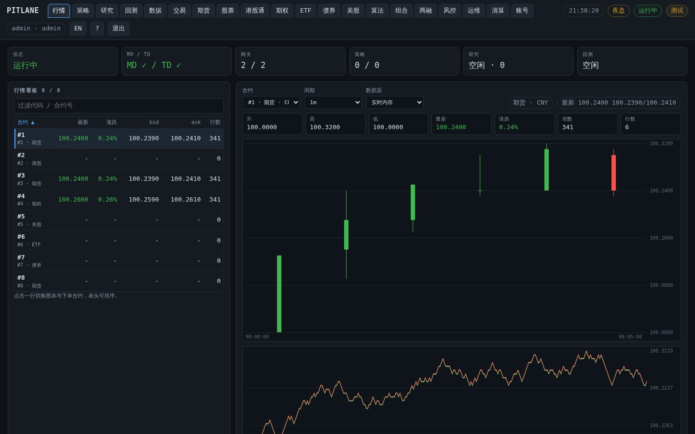
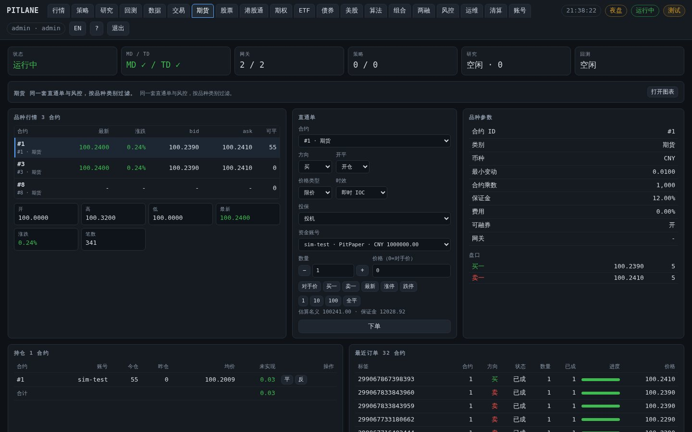
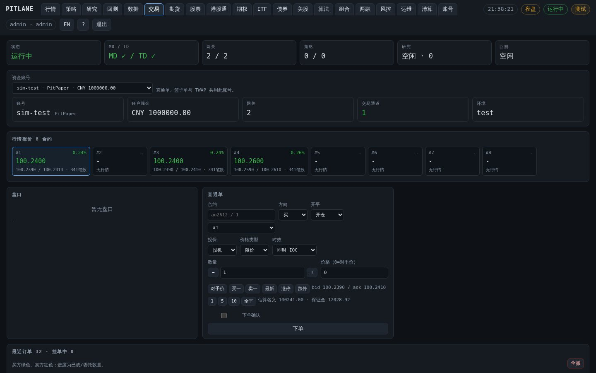
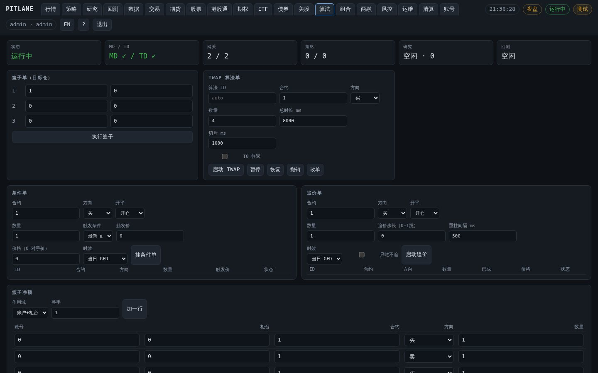
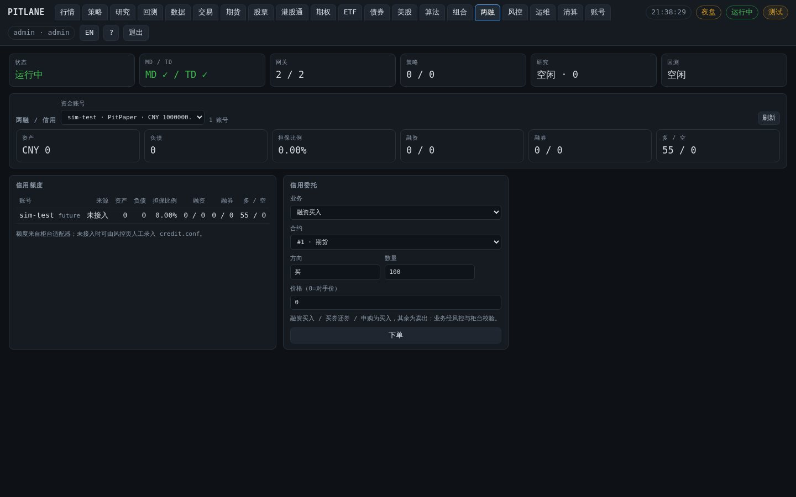

网页控制台
pitlane_trading --web <port> 用同一个页面驱动上面所有端点。测试与实盘模式的版式完全一致，模式徽标只决定页面允许你操作哪些对象。以下为纸面盘运行：

行情页把可排序的行情看板与块式行情图表并排；会话开高低、涨跌与笔数来自一次 GET /api/quotes 读取。七个品种工作区（期货、股票、港股通、期权、ETF、债券、美股）按品种类别过滤同一组行情、持仓与订单，并复用直通单与风控。

每个品种工作区显示该类别行情、品种参数、盘口、直通单，以及该类别自己的持仓与订单；期权、股票、期货各有独立工作集，不必离开页面。

交易页保留账户条、报价板、盘口、直通单、带成交进度的订单簿与全撤。每个回包都以 toast 呈现后端消息，被风控拒绝时直接显示原因。持仓行可直接平仓或反手，走同一条手工单链路。

算法页承载 TWAP（暂停、恢复、改量、撤销与 T0 往返）、条件单、追价单、篮子净额与解对锁。组合页承载配对委托、双腿配对包与文件单导入；配对包簿记在重启后仍在。

两融页读取按账号的信用额度，并通过同一个下单端点与风控提交证券信用业务轴（融资买入、融券卖出、买券还券、卖券还款、申购、赎回）。

风控页把告警横幅、盘前规则、滚动流量计数与按账号持仓放在同一屏。同屏还有按账号的信用额度表，以及柜台额度接口接入前使用的手工录入表单。

清算页给出每账号汇总、今/昨仓、双基准估值、日终历史、资金流水，以及运行快照与日终结算按钮。